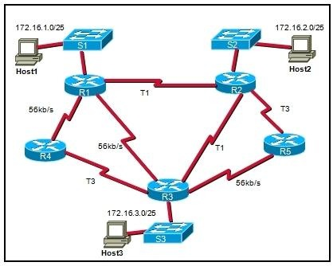

# Networking Brain Dump ### Episode 4: Internet Protocol --- # No NBD next week - I'll be out of town --- # Last time on NBD... - Ethernet has scaling limits - Scale by routing - Routers use prefix tables --- # Routed network  --- # Routing tables - Core to the router - Where do they come from? - Can be configured manually - But let's not! --- # Routing protocols - Given a graph of routers - Each router is connected to a subnet - All routers need per-prefix optimal path - Compute shortest paths --- # Distance-vector protocols - Shares routing table with the neighbors - Neighbor merges own and neighbor tables - E.g. RIP --- # Link-state - Discovers neighbor routers - Shares what's discovered with the neighbors - Each router runs Dijkstra (or Bellman-Ford) - E.g: OSPF, IS-IS --- # Routing on the Internet - Large orgs become Autonomous Systms (AS) - Use whatever to route inside - Inter AS routing: - Uses Border Gateway Protocol (BGP) - Not for novices! --- # TTL - Routing loops are bad - But not catastrophic - Sender sets TTL (e.g. 64) - Each router decrements TTL - Drops packet if zero - Sends back ICMP message --- # Fragmentation - MTUs vary across the network - IP guarantees 64Kb segments - Routers break-up segments - Destination host reassembles --- # Fragmentation (example) - Router gets 4096 byte segment - Next hop MTU is 1500 bytes - Breaks up into 3 fragments: - 1: ID=123 FragOff=0 MF=1 - 2: ID=123 FragOff=1500 MF=1 - 3: ID=123 FragOff=3000 MF=0 --- # Fragmentation - Pros: - Sender can always send upto 64Kb - Cons: - Complicates routers and IP stack - Fragment drop causes segment discard - Attack vector --- # Fragmentation: Don't! - IP has "Don't Fragment" (DF) flag - If can't fit next-hop MTU: - Drops segment - Sends back ICMP message --- # Internet Control Message Protocol (ICMP) - Helper protocol - Rides on top of IP header - Specifies a number of messages --- # ICMP: Ping - Used by `ping` utility - Ping-pongs a payload --- # ICMP: TTL Exceeded - Sent by router dropping the segment --- # Intermediate Routers - for i in 1..N: - send IP segment with TTL=i - wait for ICMP TTL exceeded --- # traceroute ``` $ traceroute google.com traceroute to google.com (216.58.194.206), 64 hops max, 52 byte packets 1 10.0.1.1 (10.0.1.1) 1.466 ms 0.992 ms 0.923 ms 2 96.120.88.185 (96.120.88.185) 14.632 ms 14.254 ms 13.523 ms 3 te-0-6-0-13-sur04.sanmateo.ca.sfba.comcast.net (68.85.101.41) 11.774 ms 12.512 ms 12.332 ms 4 be-318-ar01.hayward.ca.sfba.comcast.net (162.151.79.113) 13.637 ms 23.317 ms 13.885 ms 5 be-33651-cr01.9greatoaks.ca.ibone.comcast.net (68.86.94.153) 14.791 ms 15.138 ms 70.511 ms 6 be-12582-pe02.11greatoaks.ca.ibone.comcast.net (68.86.82.82) 22.298 ms 21.401 ms 13.564 ms 7 as15169-3-c.11greatoaks.ca.ibone.comcast.net (23.30.206.42) 13.898 ms 18.043 ms 13.927 ms 8 108.170.242.225 (108.170.242.225) 13.777 ms 108.170.243.1 (108.170.243.1) 13.165 ms 108.170.242.225 (108.170.242.225) 12.688 ms 9 108.170.237.105 (108.170.237.105) 32.630 ms 108.170.237.107 (108.170.237.107) 21.315 ms 108.170.237.105 (108.170.237.105) 14.721 ms 10 sfo03s01-in-f206.1e100.net (216.58.194.206) 14.377 ms 16.335 ms 13.955 ms ``` --- # ICMP: Fragmentation Needed - If DF is set and next-hop MTU is too small - Includes Next-Hop MTU --- # Path MTU (PMTU) Discovery - PMTU is *smallest* MTU in a path - Discover by: - MTU = Own-MTU - While packet does not reach dest: - Send IP segment with DF=1 - If "Fragmentation Needed" received: - MTU = Next-Hop MTU --- # IPv6 - Uses 128-bit addresses - Each cell in your body can have an IP! - No Fragmentation - NDP (ICMP messages) instead of ARP - Slow to adopt :(